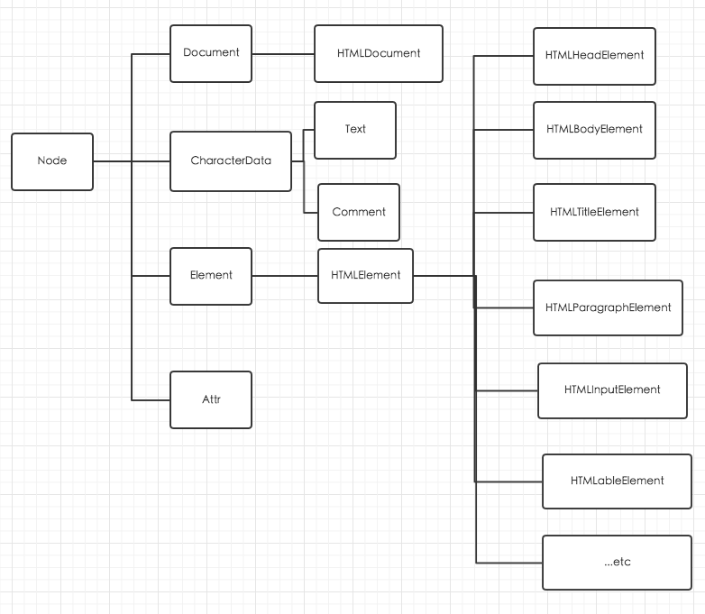

脚本化文档
Document Object Model

每个Window对象都有一个document属性指向Document
Document对象表示窗口的内容.
1. 获取文档元素
//ID
//返回`element`
document.getElementById('ID_K');
//Name
//返回NodeList
document.getElementsByName("name_K");
//根据标签
//返回HTMLCollection 在<<JavaScript权威指南>>第六版第367页中写的是返回NodeList,但是查了官网API是返回HTMLCollection的.
//因为HTML不区分大小写,所以这个也不区分大小写.
var first_p = document.getElementsTagName("p")[0];
first_p_span = first_p.getElementsTagName("span");
//通过Class
document.getElementsByClassName("K container");
//通过CSS选择器 返回NodeList
document.querySelectorAll("#K div");
document.querySelector("#K div"); //返回第一个匹配的.
HtmlDocument还定义了一些快捷的访问方式.
只读的img,form,a(包含href属性的)等元素的集合.(返回HTMLCollection)
因为在Document对象中为form img iframe applet embed ojbect元素设置name属性,既在Document对象中创建以此name属性值为名字的属性.
不太建议这样的使用方法,以下都返回的是HTMLColection
document.images;
//假如women定义了一个ID/name属性为K_404的form
document.forms.K_404;
//or
document.K_404;
document.links
2. Node属性
- parentNode : 该节点的父节点,类似Document对象此属性为null.
- childNode : 只读的类数组对象(NodeList对象),实时表示
- firstChild lastChild
- nextSibling previoursSibling
- nodeType : 节点类型
- 9表示Document节点
- 1表示Element节点
- 3表示Text节点
- 8表示Comment节点
- 11表示DcoumentFragment节点
- nodeValue : Text节点/Commetn节点的文本内容.
- nodeName : 元素的标签名,以大写形式表示
3. HTML属性作为Element的属性
var image = document.getElementByID("K_404");
var iamge_url = "../image/404_K.jpg";
///关键字 会默认前面加html 除class ,其他驼峰
document.getElementsByTagName('lable')[0].htmlFor = "404_K";
document.getElementById('K_404').className = "container";
4. 获取和设置非标准HTML属性
Element定义的方法
- setAttribute
- getAttribute
- hasAttribute
- removeAttribute
var image = document.images[0];
var width = parseInt("image.getAttribute('width')");
image.setAttribute('class',"container");
5. data- 数据集属性
因为在第四节中定义了非标准的HTML属性,导致HTML不再是合法的HTML,所以
在HTML5新增了任意以data-为前缀的小谢属性名字都是合法的,并且HTML也是合法的
HTML5在Element对象定义了dataset属性,指向一个对象,它的各个属性对应于去掉前缀data-属性.
<span class="sparklinke" data-ymin="0" data-ymax="10">
1 1 1 2 2 3 4 5 5 4 3 5 6 7 7 4 2 1
</span>
var spanrkline = document.getElementsByClassName('sparkline');
for(var i=0,length = sparklines.length;i< length ; i++){
var dataset =sparkline[i].dataset;
var ymin =parseFloat(dataset.ymin);
var ymax =parseFloat(dataset.ymax);
...
}
6. 作为Attr节点的属性
Node定义了attributes属性.非Element对象,该属性为null
对应Element对象,attributes属性是只读的类数组对象.它代表元素的所有属性,并且是实时的.
document.body.attributes[0]
document.body.attributes.bgcolor
document.body.attributes["onload"]
当索引attributes对象得到的都是Attr对象,Attr有name和value属性
7. 作为HTML的元素内容
- innerHTML
outerHTML
outerHTML返回标签的开始标签和结束标签,还有内容.当替换该属性时,标签也被替换
insertAdjacenHTML
该方法在HTML5标准化
有两个参数
为依赖的参数位置
beforebeginafterbeginbeforeendafterend1<div>2This3</div>4以上的1234和参数插入的未知对应
- 为HTML标记字符串
8. 作为纯文本的元素内容
var k = document.getElementsByTagNames('p')[0];
var text = k.textContent;
textContent和innerText的区别
- textContent只是把Text节点串联在一起.
- innerText不返回
<script>元素,和忽略多余的空白.,tabletrbodytr的innerText是只读属性.
9 创建节点
- createElement;
- createTextNode;
- createComment;
- createDocumentFragment;
- cloneNode(true/false) : 是否深层复制
- importNode() 如果它传递另一个文档的一个节点,它将返回一个适合本文档插入的节点的副本,第二个参数是布尔选择是否深层复制.
10 插入节点
- appendChild() 插在调用者的最后一个子节点
insertBefore()
有两个参数
- 待插入的节点.
- 父节点的子节点. 待插入节点会插在他前面.
//将child节点插入到parent,使其成为第n个节点
function insert_at(parent,child,n){
if(n<0 || n> parent.childNodes.length) throw new Error("invalid index");
else if (n == parent.childNodes.length) parent.appendChild(child);
else parent.inserBefore(child,parent.childNodes[n]);
}
这两个方法还可以帮节点移位,文档中的一个节点再次插入,会删除旧的.
11. 删除和替换节点
removeChlid
n.parentNode.removeChild(n);replaceChild
//b节点替换n节点. n.parentNode.replaceChild(b,n);
12. 其他文档属性
document
- cookie
- domain
- lastModified
- location
- referrer
- title
- URL
13.查询选取文本
判定用户选择了什么文本
function get_select_text(){
if(window.getSelection){ //HTML5标准
return window.getSelection().toString();
} else if (document.selection){ //IE特有
return documnet.selection.createRange().text;
}
}
14. 可编辑内容
- HTML设置contenteditable属性
设置JavaScript
some_div.contentDocument.designMode = "on";